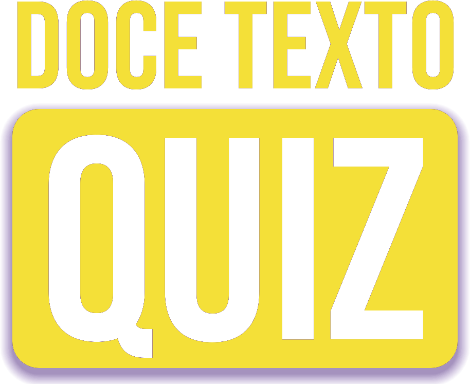
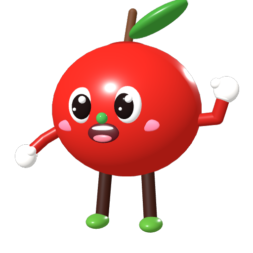
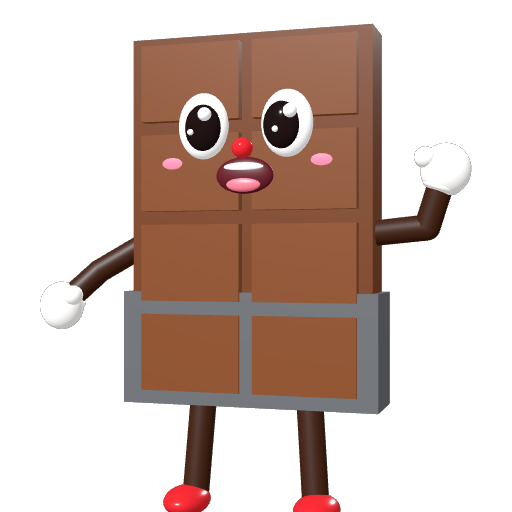
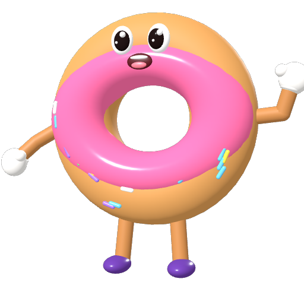
| Título | Doce Texto Quiz |
|---|---|
| Versão descrita | 0.4.0 (setembro de 2026) |
| Criação | 2023, como projeto da Turma 613 do Curso Técnico em Informática do IFBA Campus Valença (primeira versão escrita em Python com a biblioteca pygame) |
| Natureza | Jogo educativo (quiz) de perguntas e respostas |
| Área de aplicação | Educação — ensino de informática básica (editores de texto e planilhas eletrônicas) |
| Linguagem de programação | GDScript (motor Godot Engine 4.7), com dados em JSON |
| Plataformas | Celulares e tablets Android (versão 7 ou mais nova), em modo paisagem; navegadores web |
| Requisitos | Não precisa de internet para jogar, não pede permissões no celular e não coleta dados pessoais. O progresso fica salvo apenas no próprio aparelho. |
Agradecimento especial: Prof. Wagner Ribeiro de Carvalho.
O jogo foi idealizado, desenhado e programado pelos alunos acima, com orientação dos professores do campus. A versão atual (reconstruída em 2026) mantém a mesma autoria, o mesmo nome, a mesma proposta pedagógica, a identidade visual (roxo e amarelo) e a estrutura de telas da versão de 2023.
O Doce Texto Quiz é um jogo educativo de perguntas e respostas sobre editores de texto e planilhas eletrônicas, com foco no Microsoft Word e no Microsoft Excel. O jogador escolhe um de três níveis (fácil, médio e difícil) e responde a 10 perguntas sorteadas de um banco de 60, com 30 segundos para cada uma. Acertando 6 ou mais, passa de nível e conquista um título de “doceiro” (Noob, Pro e Mestre). Ao final de cada partida, o jogo mostra o aproveitamento e explica, pergunta por pergunta, qual era a resposta certa e por quê.
Para manter a motivação, o jogo usa elementos de jogos digitais: estrelas, pontos por rapidez, sequências de acertos, moedas, ajudas, conquistas, estatísticas de desempenho e uma coleção de personagens em 3D — todos doces, que dão nome e identidade ao jogo (“Doce Texto”).
Editores de texto e planilhas estão entre as ferramentas mais usadas nos estudos e no trabalho. Mesmo assim, muitos alunos usam apenas uma pequena parte dos seus recursos. O Doce Texto Quiz nasceu para tornar o estudo desses programas mais leve e divertido, transformando a revisão do conteúdo em um jogo.
Avaliar e reforçar, de forma lúdica e interativa, o conhecimento sobre os conceitos, funções e recursos de editores de texto e planilhas eletrônicas.
Jogos educativos aumentam o engajamento e a fixação do conteúdo, porque unem desafio, retorno imediato e recompensa. Ao contrário de uma lista de exercícios, o quiz convida o aluno a jogar de novo para melhorar a sua marca — e cada nova partida é uma nova revisão do conteúdo.
Público-alvo: estudantes de cursos técnicos e do ensino médio, alunos de cursos de informática básica e qualquer pessoa que queira testar e aprimorar seus conhecimentos de Word e Excel. O jogo também pode ser usado por professores como atividade de revisão em sala de aula.
| Níveis | Fácil, médio e difícil. O primeiro começa liberado; cada nível vencido libera o seguinte. |
|---|---|
| Partida | 10 perguntas sorteadas entre as 20 do nível, com as alternativas embaralhadas. O sorteio prioriza as perguntas nunca vistas e as erradas, e evita repetir a partida anterior. |
| Tempo | 30 segundos por pergunta. Se o tempo acabar, a pergunta conta como erro. |
| Aprovação e estrelas | Com 6 acertos o jogador passa no nível (1 estrela); com 8, ganha 2 estrelas; com 10, 3 estrelas. |
| Títulos | Passar no fácil, no médio e no difícil dá os títulos Doceiro Noob, Doceiro Pro e Doceiro Mestre. |
| Pontos | Cada acerto vale de 100 a 200 pontos, conforme a rapidez. Três acertos seguidos multiplicam os pontos por 1,5 e cinco seguidos, por 2 (combo). Cada nível guarda o recorde de pontos. |
| Moedas e ajudas | Acertos, estrelas e conquistas rendem moedas. Durante a partida, é possível usar ajudas: eliminar duas alternativas erradas (30 moedas) ou ganhar 10 segundos (20 moedas). |
| Revisão dos erros | Uma partida especial só com as perguntas que o jogador errou da última vez, de todos os níveis. Não altera os níveis, mas corrige o histórico e dá moedas. |
| Conquistas | 16 metas especiais (ex.: acertar 10 de 10, responder em menos de 3 segundos, jogar 25 partidas), cada uma com recompensa em moedas. |
| Coleção de doces | 13 personagens em 3D. Um vem de graça, três são ganhos com os títulos e nove são comprados com moedas. O doce escolhido como “companheiro” aparece na tela de carregamento. |
A estrutura de telas é a mesma da versão de 2023, agora com mais recursos. Todas as telas são exibidas com o celular deitado (modo paisagem).
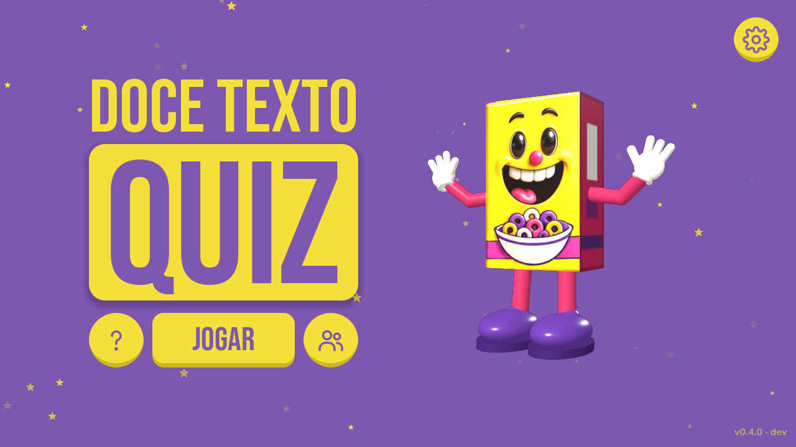
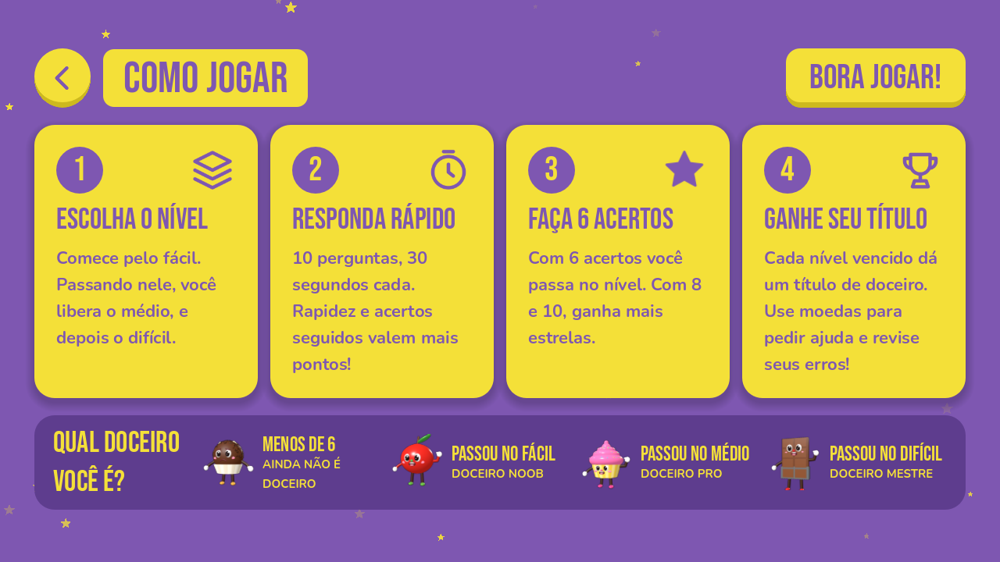
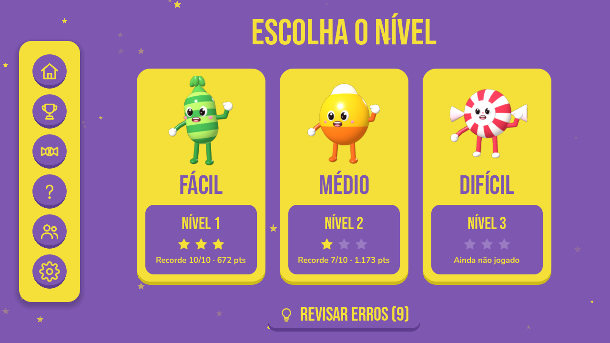
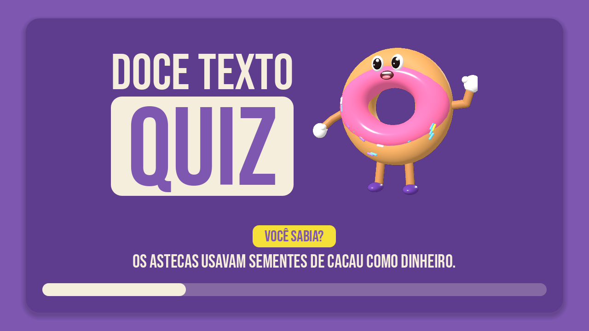
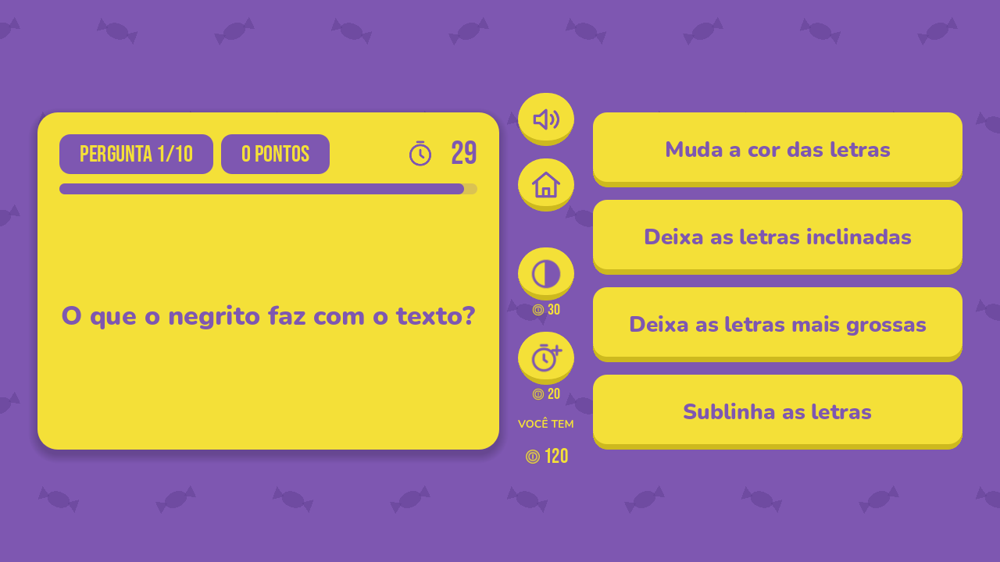
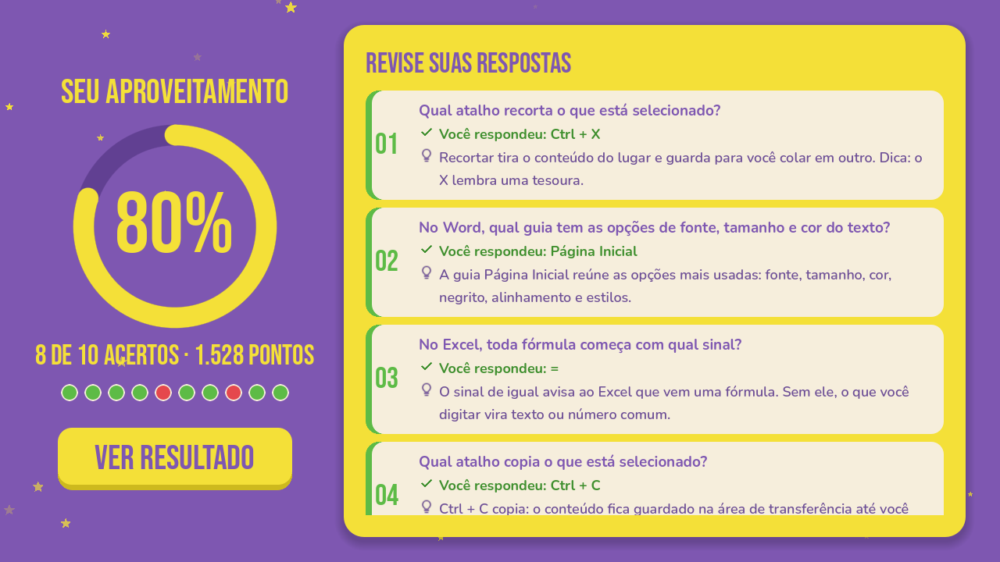
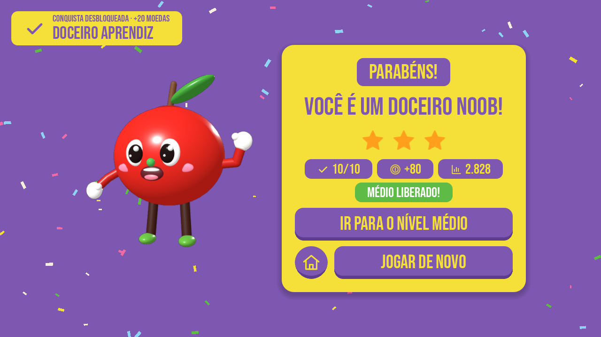
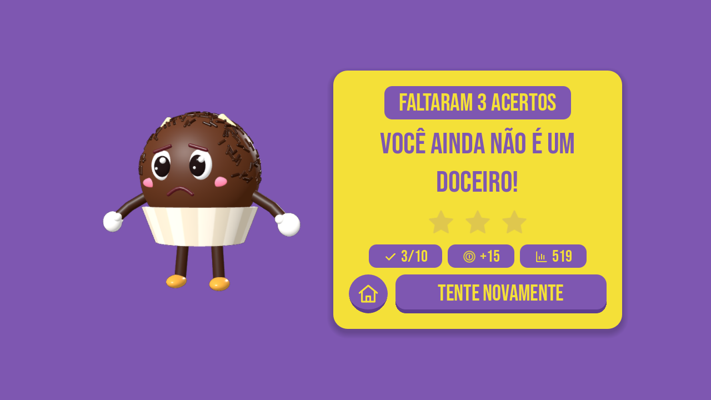
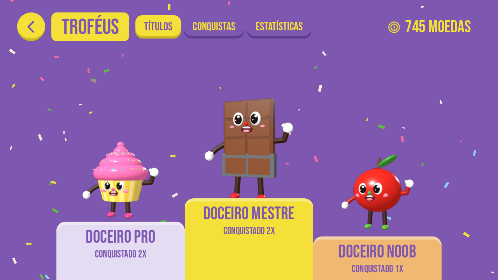
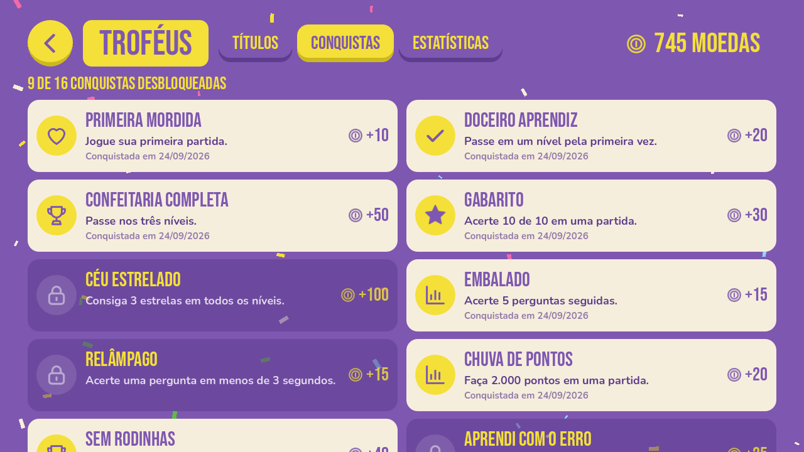
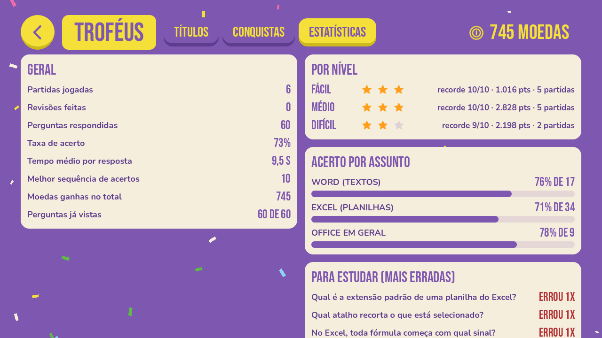
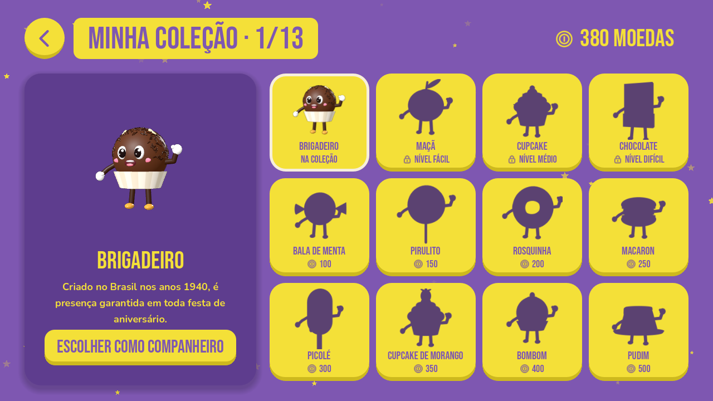
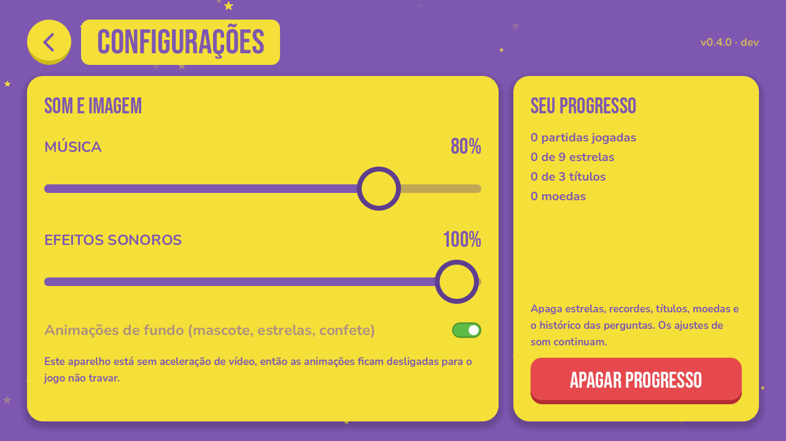
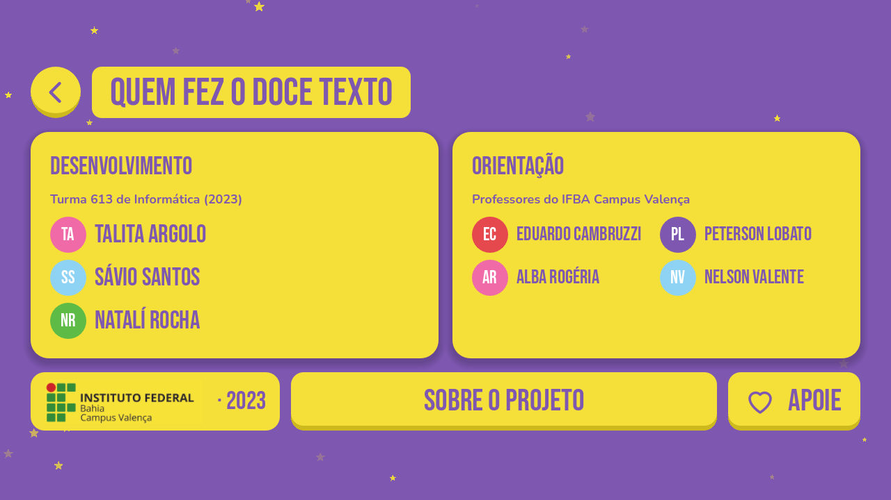
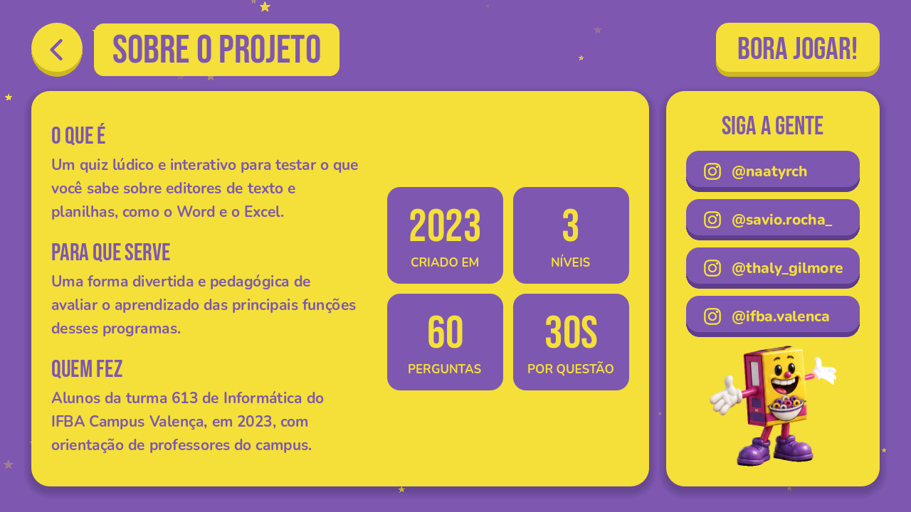
| Item | Quantidade | Observação |
|---|---|---|
| Perguntas | 60 (20 por nível) | Word: 17 · Excel: 34 · Office em geral: 9 |
| Explicações | 60 | Uma por pergunta, exibida na revisão das respostas |
| Dicas e curiosidades | 40 | 20 dicas de Word/Excel e 20 curiosidades, na tela de carregamento |
Os assuntos vão do básico (programas do Office, extensões de arquivos, atalhos de copiar, colar e desfazer, células, linhas e colunas) ao avançado (funções SE, CONT.SE, SOMASE, PROCV, SEERRO, tabela dinâmica, referências absolutas, mala direta, sumário automático, macros e quebras de seção). As perguntas ficam em um arquivo de dados separado do código (perguntas.json), o que facilita a revisão por professores e a inclusão de novas perguntas.
| Aspecto | Versão de 2023 | Versão atual (0.4.0) |
|---|---|---|
| Tecnologia | Python com pygame, para computador | Godot 4 (GDScript), para Android e navegador |
| Perguntas | Lista fixa, sempre na mesma ordem | 60 perguntas sorteadas, com explicações |
| Progressão | Aproveitamento e título ao final | Níveis liberados em ordem, estrelas, recordes e pontos |
| Retorno ao aluno | Lista de questões certas/erradas | Resposta certa e explicação de cada pergunta, revisão dos erros e estatísticas |
| Motivação | Títulos de doceiro | Títulos, moedas, ajudas, 16 conquistas e coleção de doces 3D |
| Personagens | Ilustrações 2D | Personagens 3D originais, feitos no próprio projeto |
| Configurações | Botão de som | Volumes separados, animações e apagar progresso |
O registro de programa de computador no INPI é regido pela Lei nº 9.609/1998 (Lei do Software). O pedido é feito pela internet e não exige o envio do código-fonte: o requerente informa um resumo digital (hash) do código, que comprova a sua autoria, e guarda o código original em segurança.
| Título | Doce Texto Quiz |
|---|---|
| Data de criação | 2023 (informar a data exata da primeira versão, conforme os registros da turma) |
| Linguagem | GDScript (Godot Engine); versão original em Python |
| Campo de aplicação | Educação — escolher o código correspondente na tabela de campos de aplicação do INPI |
| Tipo de programa | Jogo educacional — escolher o código correspondente na tabela de tipos de programa do INPI |
| Autores | Sávio Santos Rocha, Natalí Rocha e Talita Argolo |
| Titular | A definir com o Núcleo de Inovação Tecnológica (NIT) do IFBA: por ter sido desenvolvido na instituição, com orientação de professores, a titularidade costuma ser da instituição, com os alunos como autores. |
O Doce Texto Quiz é uma ferramenta educativa que une o estudo de editores de texto e planilhas à linguagem dos jogos digitais. A proposta criada pela Turma 613 em 2023 — um quiz leve, colorido e cheio de doces — foi preservada e ampliada: hoje o jogo funciona no celular e no navegador, explica cada resposta, adapta o sorteio ao desempenho do aluno, acompanha a sua evolução e oferece recompensas que estimulam a prática contínua.
Com isso, o jogo não apenas avalia o que o estudante já sabe, mas se torna um apoio real ao aprendizado, que pode ser usado em sala de aula ou em casa, em aparelhos simples e sem acesso à internet.